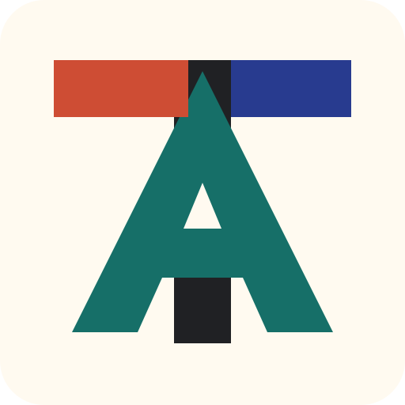

Software systems
Practical applications, internal tools, integrations, and stable workflows.

Teddy AlstonCV landing page
Builder focused on practical software systems, automation workflows, and useful AI-assisted tools.
Profile
I work best where product thinking, operations, and software meet: turning scattered processes into reliable tools, usable workflows, and sharper decisions.
Full CV details will be added after the short and long resume drafts are finalized.
Focus
Practical applications, internal tools, integrations, and stable workflows.
Reducing manual work through repeatable processes and dependable tooling.
Using AI where it improves speed, judgment, review loops, and execution.
CV snapshot
The condensed profile, headline strengths, and selected recent work will appear here.
The expanded experience, projects, education, credentials, and supporting details will appear here.
Contact